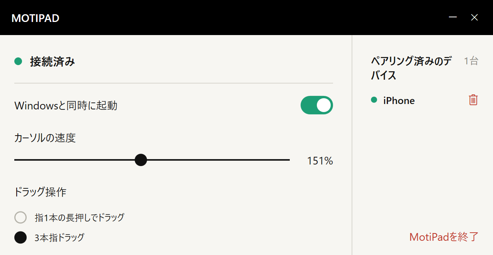

省スペース
マウスを動かす場所がなくても、
指は動かせる。
マウスを動かすためのスペースは不要。iPhone の画面を指でなぞって、パソコンのカーソルを操作できます。
省スペースで、持ち物もひとつ減らせる。
使い慣れたジェスチャを、iPhone で。


カフェの小さなテーブル、仮の作業スペース、荷物を減らしたい日。いつも持っている iPhone が、タッチパッドになります。
マウスを動かすためのスペースは不要。iPhone の画面を指でなぞって、パソコンのカーソルを操作できます。
マウスやタッチパッドを持ち歩きたくないときも。手元の iPhone に、もうひとつの役割を。
カーソル移動、タップ、2 本指スクロール。
シンプルな操作面で、目の前の作業に集中できます。
大きな画面の端までファイルを動かしたいのに、指は iPhone の端へ。そんなときは、指を少し離して置き直し、そのままドラッグを続けられます。
よく使うパソコンをペアリングして、iPhone のメニューから操作する 1 台を選択。作業場所が変わっても、使い続けられます。
よく使うパソコンをペアリング一覧へ。
メニューから操作先を切り替えられます。
一度に操作するパソコンは 1 台です。
MotiPad を開いて、画面上でカーソル移動、スクロール、ドラッグを操作します。
受信アプリをインストールし、同じローカルネットワークでペアリング。カーソル速度やドラッグ操作はパソコン側で調整できます。
App Store と Windows 受信アプリの正式なダウンロードリンクを、こちらに掲載します。